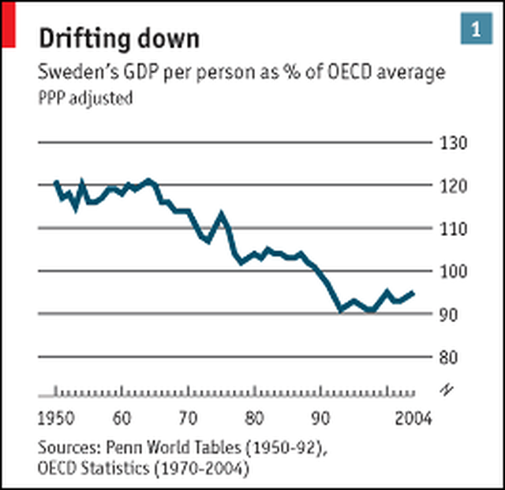
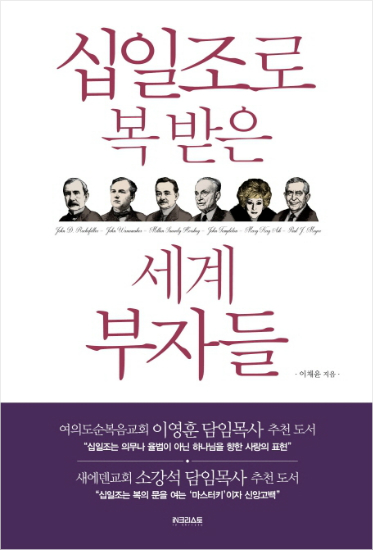

누가복음 12장의 어리석은 부자 - 자본주의와 사회주의
게시: 2019-09-19T06:30:55+09:00
누가복음 12장에는 어리석은 부자에 대한 은유가 나옵니다. 한줄로 요약하면 부질없는 세속적인 부에 연연하지 말고 하나님의 의를 구하라는 내용입니다. 12:16 예수님께서 사람들에게 비유를 말씀해 주셨습니다. “어떤 부자의 밭에서 수확이 많이 나왔다. 12:17 그 부자는 속으로 생각했다. ‘내 곡식을 저장해 둘 곳이 없으니 어떻게 할까?’ 12:18 그는 말했다. ‘이렇게 해야겠다. 내 곳간을 헐고 더 큰 곳간을 세워 거기에 내 모든 곡식과 물건을 저장하겠다.’ 12:19 그리고 자기 자신에게 말할 것이다. ‘인생아, 여러 해 동안 쓰기에 넉넉한 많은 재산을 가졌으니 편히 쉬고 먹고 마시며 인생을 즐겨라.’ 12:20 그러나 하나님께서 그 사람에게 말했다. ‘어리석은 사람아! 오늘 밤 네 영혼을 가져갈 것이다. 그러면 네가 준비한 것을 누가 가져가겠느냐?’ 12:21 이런 사람은 자신을 위해 재물을 쌓고 하나님께 대하여 부요하지 못한 사람이다.”
이 부자는 이렇게 대풍이 들었을 때 어떻게 행동을 해야 했을까요 ? 성 아우구스티누스(St. Augustinus)는 이 구절에 대해 이렇게 설명했습니다. "배고픈 이웃의 뱃속보다 더 적절한 곳간은 없다."
(성 아우구스티누스는 누미디아, 즉 지금의 알제리-리비아에서 태어난 로마 시대 신학자로서, 늦은 나이에 개종하여 성인의 반열에 올랐습니다. 인종적으로는 베르베르인, 즉 아랍인입니다.) 하지만 그건 경제에 대해서는 1도 모르는 아랍인의 해석일 뿐이고, 아마 각자의 신념에 따라 행동은 다르게 나오지 않았을까 합니다. 1. 공산주의자 애초에 밭에서 많은 잉여 농산물이 나온 것은 생산수단인 밭을 소유한 지주의 공이 아니라 밭에서 힘든 노동을 한 농민들의 공이다. 추수한 곡물은 딸린 식구 수에 따라 노동자들끼리 나눠가져야 하고 밭은 집단농장 체제로 바꿔야 한다. 아무 일도 하지 않은 지주를 굳이 하나님이 데려가실 필요 없다. 성난 농민들이 알아서 저승으로 보내줄 것이다.
(인정합시다... 20세기는 마르크시즘의 시대였고, 지금은 21세기입니다. Marx no more. Marx is history.)
2. 자본주의자 잉여 농산물을 시장에 내다팔아 더 많은 농기구와 비료를 구입해야 한다. 그걸 이용해서 생산성을 높이면 내년에는 더 많은 생산량을 얻을 수 있을 것이다. 그걸로 더 넓은 땅을 사고, 사람들을 고용해서 더 크게 농사를 지어서 더 많은 돈을 벌어야 한다. 자선 ? 고용이 최고의 자선이다. 죽으면 끝이라고 ? 아니다. 지주가 죽더라도 상속세 내지 않도록 재단을 만들어 거기에 밭을 넘기고 대신 자녀들이 그 이사회를 장악하도록 한다.
(저 개인적으로 고용이 최고의 자선이라는 말에 100% 공감합니다. 정말 respect !)
3. 사회주의자 많은 소득을 올린 만큼 많은 세금을 내고, 소작농들에게도 인센티브를 많이 지급하여 이익을 공유해야 한다. 이번에 많이 낸 세금은 결국 마을 인프라와 마을 복지에 투입될 것이고, 그건 결국 다시 생산성 증대와 함께 혹시라도 흉작이 들 경우 소작농들이 먹고 살 길을 만들어줄 것이다. 그렇게 마을 전체가 잘 살게 되면 마을 사람들이 농작물을 더 많이 소비하게 될 것이고, 나도 덩달아 더 잘 살게 될 것이다. 그렇게 우리 마을이 스웨덴 같은 복지 마을이 되면 내가 죽더라도 내 자식들도 잘 살 수 있겠지.

(스웨덴이 정말 사회주의 복지천국인지, 과연 저 모델이 지속가능한 것인지는...)
4. 한국식 자본주의 잉여 농산물은 물론 그 밭까지 팔아서 그걸로 예루살렘에 집을 사야 한다. 한 5년 꾹 참고 쥐고 있으면 농사짓는 것보다 훨씬 더 많은 돈을 벌 수 있다. 오늘밤 내가 죽는다고 ? 괜찮다. 내가 우리 동네 목사에게 십일조를 몇년간이나 냈는데 난 천국가는 것이 확실하다. 어떻게 확신하냐고 ? 하나님이 축복하심 덕분에 내가 이렇게 부자로 살았다. 그거보다 더 확실한 증거가 어디 있냐 ?

(니들이 그렇게 가난뱅이로 사는 이유는 다 니들이 십일조를 안하기 때문이에요. 우리 모두 십일조 내고 부자되자구 !) 종교 자체를 부정하는 공산주의는 모든 종교가 싫어하지만, 특히 한국 교회에서는 (아마도 북한의 교회 탄압과 한국전쟁의 상처 때문에) 개신교도는 특히 공산주의를 증오하는 전통이 있고, 거기에 사회주나 공산주의나 같은 것이라는 오해가 겹쳐서 "크리스천이라면 당연히 사회주의를 적대시해야 하는 것이 의무"라고 생각하는 경우가 많습니다. 하지만 아래 성서 구절은 분명히 사회주의적인 덕목을 말하고 있습니다. 사도행전 2장 44~45절 : 믿는 사람은 모두 함께 지내며, 모든 것을 공동으로 소유하였다. 그들은 재산과 소유물을 팔아서, 모든 사람에게 필요한 대로 나누어주었다. 사도행전 4장 32~35절 많은 신도가 다 한 마음과 한 뜻이 되어서, 아무도 자기 소유를 자기 것이라고 하지 않고, 모든 것을 공동으로 사용하였다. 사도들은 큰 능력으로 주 예수의 부활을 증언하였고, 사람들은 모두 큰 은혜를 받았다. 그들 가운데는 가난한 사람이 한 사람도 없었다. 땅이나 집을 가진 사람들은 그것을 팔아서, 그 판 돈을 가져다가 사도들의 발 앞에 놓았고, 사도들은 각 사람에게 필요에 따라 나누어주었다. 어떤 분들은 이에 대해 '이건 자발적으로 하라고 하는 것이지 사회주의처럼 강제로 세금을 걷어가라고 하는 것은 아니다' 라고 합니다. 하지만 예수님을 믿는다면서 예수님의 가르침은 따르지 않는다는 것이 말이 되는 것인지 저는 모르겠습니다. 그리고 사회주의자는 그저 세금만 떼어갈 뿐이고 공산주의자는 사유재산을 통째로 가져가는 것으로 그치지만, 하나님께서는 가난한 이웃을 돕지 않는 자들을 불지옥에서 지글지글 타닥타닥 태우면서 영원히 고통받게 하겠다고 하셨습니다. 차라리 세금 내는 것이 훨씬 낫습니다.
마태복음 7장 21절
내게 ‘주여, 주여’ 한다고 해서 모두 다 하늘 나라에 들어갈 것이 아니라 하늘에 계신 내 아버지의 뜻을 실행하는 사람만 들어갈 것이다.
마태복음 25장 41~46절 그 때에 임금은 왼쪽에 있는 사람들에게도 말할 것이다. ‘저주받은 자들아, 내게서 떠나서, 악마와 그 졸개들을 가두려고 준비한 영원한 불 속으로 들어가라. 너희는 내가 주릴 때에 내게 먹을 것을 주지 않았고, 목마를 때에 마실 것을 주지 않았고, 나그네로 있을 때에 영접하지 않았고, 헐벗었을 때에 입을 것을 주지 않았고, 병들어 있을 때나 감옥에 갇혀 있을 때에 찾아 주지 않았다.’ 그 때에 그들도 이렇게 말할 것이다. ‘주님, 우리가 언제 주님께서 굶주리신 것이나, 목마르신 것이나, 나그네 되신 것이나, 헐벗으신 것이나, 병드신 것이나, 감옥에 갇히신 것을 보고도 돌보아 드리지 않았다는 것입니까?’ 그 때에 임금이 그들에게 대답하기를 ‘내가 진정으로 너희에게 말한다. 여기 이 사람들 가운데서 지극히 보잘 것 없는 사람 하나에게 하지 않은 것이 곧 내게 하지 않은 것이다’ 하고 말할 것이다. 그리하여, 그들은 영원한 형벌로 들어가고, 의인들은 영원한 생명으로 들어갈 것이다.”
제가 이런 말을 적어놓으면 기독교를 믿지 않는 분들께서는 '왜 엉뚱하게 종교를 이용해 복지제도 확대를 강요하려드느냐'라고 반감을 가지실 수 있습니다. 당연히 그런 강요를 해서는 안되고 제게는 강요할 힘도 없습니다. 다만 '기독교인이라면 사회주의에 맞서 싸워야 한다'라는 오해는 나오지 않았으면 합니다.